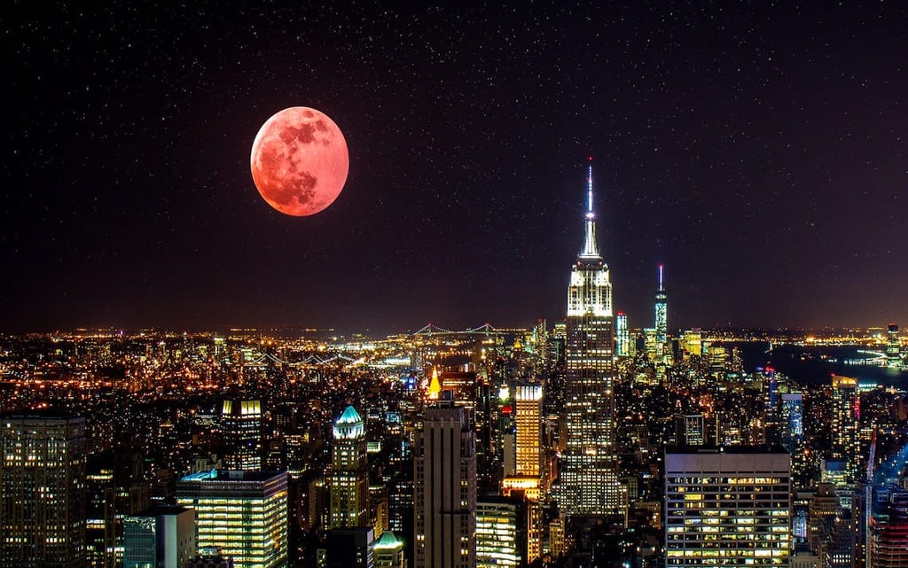

Historia de la exploración espacial
El Universo siempre ha fascinado a los seres humanos, que desde la Antigüedad soñaban con alcanzar mundos diferentes al suyo. Algunos escritores y cineastas del siglo XIX y principios del XX como Julio Verne y George Méliès abordaron el tema de la exploración espacial, pero no fue hasta mediados del siglo XX que este sueño se materializó. -- [Fuente: GeoEnciclopedia]
Noticias
Luna de sangre en mayo de 2022: ¿cómo verla?
En mayo de 2022 esperamos un glorioso espectáculo celestial: el eclipse lunar total se verá desde las Américas, África y una parte de Eurasia.¿A qué hora es el eclipse lunar en mayo de 2022?
La fase completa del eclipse lunar total comenzará el 16 de mayo, a las 03:30 GMT, cuando la sombra de la Tierra cubra completamente la Luna. -- [Fuente: Starwalk] 